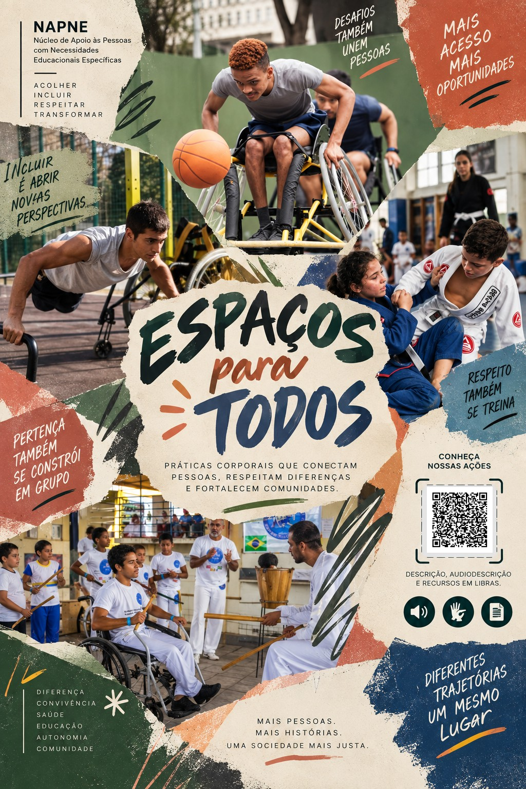
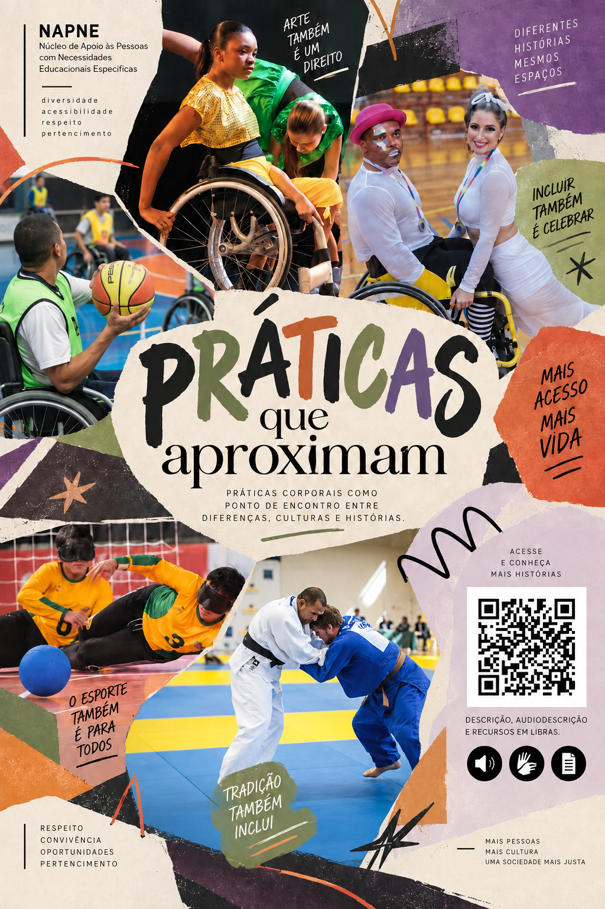
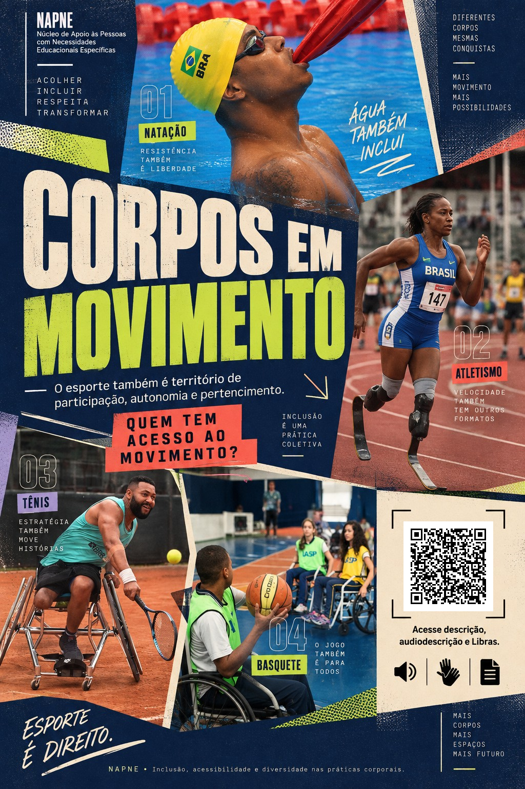

Espaços para todos
O espaço também educa: acesso, pertencimento e convivência transformam quem pode participar.
Ver painelExposição digital · NAPNE
Desafiando a Hegemonia nas Práticas Corporais
“Quem define o que um corpo pode fazer?”
Uma exposição sobre corpos, espaços e práticas que ampliam as possibilidades de participação. Aqui, movimento não é um modelo único: é experiência, cultura, autonomia e direito.
Explorar a exposição00
Um olhar sobre o movimento
As práticas corporais também são territórios de disputa, pertencimento e transformação. Quando questionamos quem pode ocupar, praticar e participar, abrimos espaço para outras histórias e outras formas de existir.
Quatro perspectivas
Fotografias e narrativas que colocam acessibilidade, diversidade e pertencimento no centro da conversa.

O espaço também educa: acesso, pertencimento e convivência transformam quem pode participar.
Ver painel
Movimento como ponto de encontro entre diferenças, culturas e histórias compartilhadas.
Ver painel
O esporte também é território de participação, autonomia e novas possibilidades de movimento.
Ver painel
Se corpos diferentes podem dançar, lutar, correr e ocupar espaços, por que ainda imaginamos um único corpo?
Ver painelPara além da exposição
Que o movimento possa ser vivido sem que um único padrão determine quem pertence, quem participa ou quem tem acesso.